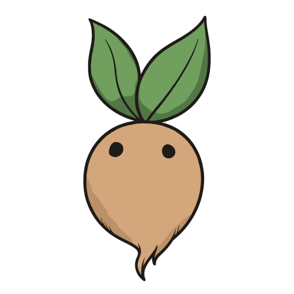

🌱 曼德拉草農場 🌱
🍎 當前果實
100
⚡ 每秒產量
0
批量購買：
1個
10個
100個
🔄 重生系統
重生可獲得天賦點，用於永久提升！
預計獲得：
0
天賦點
重生
⭐ 天賦點數
0
累積天賦點數
🎁 可領取獎勵：
0
/
2
下次獎勵：
30:00
領取獎勵
歡迎來到曼德拉草農場！開始你的魔法種植之旅吧！
📊 統計
🔮 強化
成就
商店
圖鑑
幫助
🌤️
當前天氣：
晴天
效果：
所有產量 +10%
重骰天氣 (
100
果實)

📊 遊戲統計
×
🎁 選擇你的獎勵！
🔮 選擇你的強化！
達成里程碑：任意曼德拉草達到 100 株